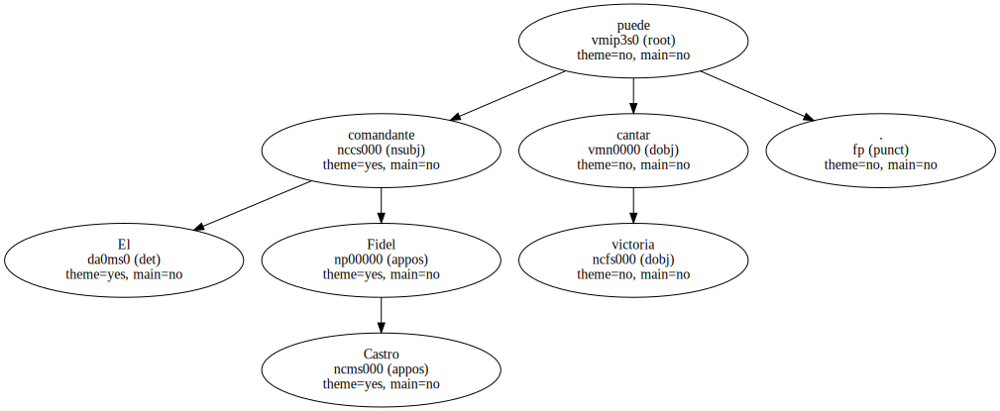
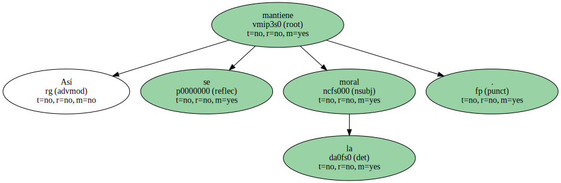
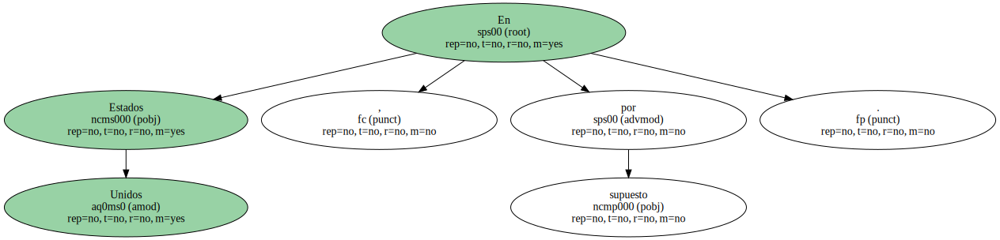

Algún anticastrista con cerebro debería frenar la campaña para la repatriación de Eliancito , el niño balsero.
Que se vaya con su padre y sus abuelas.
Que le paseen triunfalmente en un carro descapotable del 58 y que un millón de personas le aclame en el Malecón.
El comandante Fidel Castro puede cantar victoria.
Pero no le durará.
El régimen se tambalea y pronto caerá.
Los que ahora quieren retener al pequeño en Miami pronto le podrán abrazar en La Habana.
Así se mantiene la moral.
Si ponen atención en lo que se dice y se escribe sobre una posible repatriación de Eliancito , los que se fueron al exilio han de estar desesperanzados.
Para gente que lleva años esperando volver , ha de ser deprimente leer y escuchar las diferencias sobre el futuro que espera al chico , según pueda quedarse en Estados Unidos o lo repatríen a Cuba.

En la isla crecerá entre carencias y precariedades y echará en falta la abundancia que ahora ha podido conocer en casa de sus parientes.
Mientras tanto , los que ahora no quieren que se vaya deberán seguir esperando en Miami.
En Cuba recibirá adoctrinamiento marxista , mientras que en Estados Unidos se formará en un clima de libertad , lo que le dará conciencia de hombre libre.
Los que ahora se han manifestado para evitar que sus abuelas se lo llevaran , se seguirán consumiendo en tierras norteamericanas.
El futuro de Eliancito , cuando ya sea todo un Elián hecho y derecho , será triste y amargo en el sistema castrista , mientras que bajo la bandera de las barras y las estrellas será radiante y feliz.

Los años no perdonan y de sus protectores actuales sólo quedará el recuerdo y el nombre en una lápida funeraria.
En Estados Unidos , por supuesto.
Es el panorama que se deduce cuando se habla y se escribe del futuro que puede esperar el niño balsero en uno u otro sitio.

Las esperanzas de volver entre los que se fueron han de estar por los suelos.
Para que la moral del exilio no se hunda , mejor será dejar de hablar de su futuro y que se vaya para Cuba.
Por cuatro días ....
.